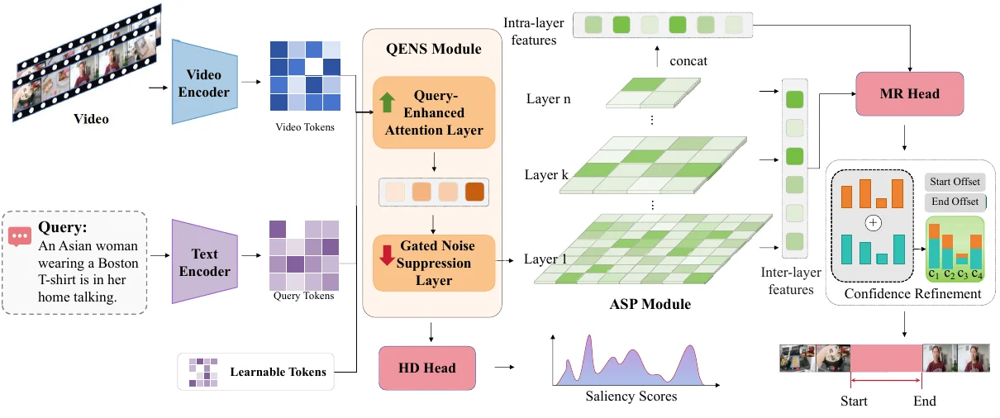

返修Under revision
Boundary-aware Multimodal Alignment Network for Video Temporal GroundingBoundary-aware Multimodal Alignment Network for Video Temporal Grounding
ACM Transactions on Multimedia Computing, Communications, and Applications 投稿稿Manuscript submitted to ACM Transactions on Multimedia Computing, Communications, and Applications
全文暂不公开。Full text is not publicly available.

研究概述Overview
BMANet 面向视频时刻检索与高光检测。方法通过 QENS 使用可学习 token 增强文本查询，并以门控机制抑制无关视频响应；ASP 在多个时间尺度建模长短片段，再联合优化时刻检索与高光检测。稿件在 QVHighlights、Charades-STA、TACoS、TVSum 和 Ego4D-NLQ 数据集上报告了评估结果。BMANet studies video temporal grounding and highlight detection. Its QENS module enhances a text query with learnable tokens and gates irrelevant video responses. ASP models segments at multiple temporal scales, followed by joint optimization of moment retrieval and highlight detection. The manuscript reports evaluations on QVHighlights, Charades-STA, TACoS, TVSum, and Ego4D-NLQ.
核心工作Key Contributions
- 用查询增强与门控响应减轻短文本和长视频之间的对齐噪声。Uses query enhancement and gated responses to reduce alignment noise between short text and long video.
- 在多时间尺度刻画事件边界，并联合处理时刻检索与高光检测。Models event boundaries at multiple temporal scales and jointly addresses moment retrieval and highlight detection.